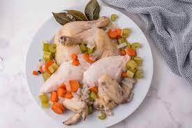

Return
Boiled Chiken

Description
If you've ever caught yourself in need of a rotisserie chicken but didn't have one, then knowing how to boil chicken will be your saving grace.
With no time (or energy) to run to the store, boiling chicken is the perfect way to get to tender, juicy chicken that's easy to shred.
Ingredients
- 4 boneless skinless chicken breasts
- 4 c.low-sodium chicken broth (or water)
- Kosher salt
- Freshly ground black pepper
Step by step guide
- In a large pot over medium-high heat, add chicken. Pour broth over chicken to cover and season generously with salt and pepper.
- Bring to a boil, then cover and reduce heat to medium. Let simmer until chicken is cooked through, 10 minutes. Remove from pan and let rest 10 minutes.
- Shred chicken with two forks and use as desired.